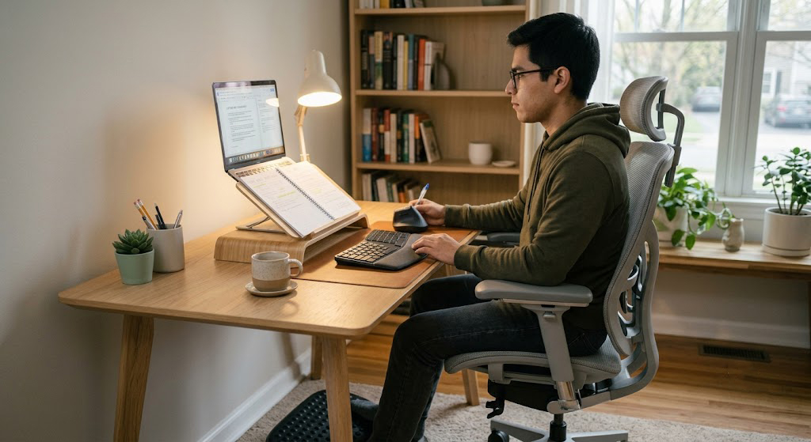
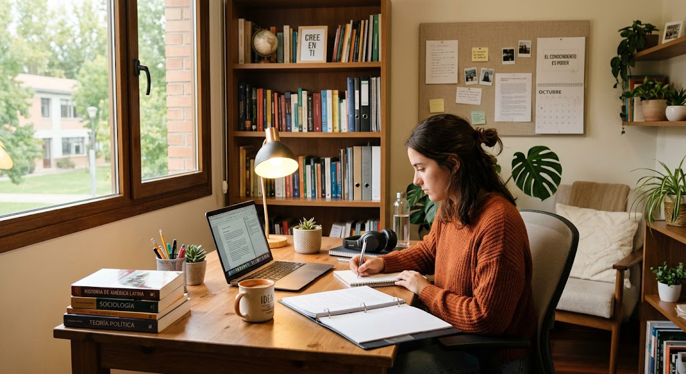

¿Por qué influye tanto el lugar donde estudias?
El espacio donde estudias tiene un impacto directo en tu capacidad para concentrarte. Un escritorio limpio, bien iluminado y organizado reduce las distracciones y hace que tu cerebro relacione ese lugar con el aprendizaje.
No necesitas una habitación enorme ni muebles costosos. Con pequeños cambios puedes crear un ambiente cómodo que favorezca tu productividad.
"Tu entorno influye en tus hábitos. Diseña un espacio que te invite a estudiar."
— EnfocaTLa importancia de una buena iluminación
Una iluminación adecuada reduce la fatiga visual y mejora la concentración. Siempre que sea posible, aprovecha la luz natural durante el día y complétala con una lámpara de escritorio para las horas de la noche.
☀️ Luz natural
Favorece la concentración y reduce el cansancio visual.
💡 Luz blanca
Ideal para estudiar durante la noche sin forzar demasiado la vista.
🖥️ Evita reflejos
Ubica la pantalla de manera que no reciba luz directa.
👀 Descansa la vista
Aplica la regla 20-20-20 para reducir la fatiga ocular.
Organiza tu escritorio para concentrarte mejor
Un escritorio desordenado puede convertirse en una fuente constante de distracciones. Mantener únicamente los elementos que realmente necesitas te permitirá trabajar con mayor comodidad y eficiencia.
📝 Solo lo necesario
Mantén sobre el escritorio únicamente los materiales que utilizarás durante la sesión.
📦 Usa organizadores
Cajones, cajas o portalápices ayudan a mantener cada objeto en su lugar.
🧹 Limpieza diaria
Dedica dos minutos al finalizar el estudio para dejar todo organizado.
🎒 Guarda lo que no uses
Evita acumular libros, papeles y objetos innecesarios sobre el escritorio.
Cuida tu postura mientras estudias
Pasar varias horas sentado puede generar molestias si tu espacio no está bien adaptado. Una buena postura mejora la comodidad y también favorece la concentración.
🪑 Recomendaciones básicas
Mantén la espalda apoyada, los pies completamente sobre el suelo, los codos formando un ángulo cercano a 90° y la pantalla del computador a la altura de los ojos.

Decora sin generar distracciones
Tu espacio de estudio debe ser agradable, pero sin exceso de elementos que desvíen tu atención. La clave está en lograr un equilibrio entre comodidad y simplicidad.
🌿 Plantas
Una planta pequeña aporta frescura y hace el ambiente más agradable.
🖼️ Inspiración
Coloca una frase motivadora o un tablero con tus metas.
🎨 Colores suaves
Los tonos claros transmiten calma y ayudan a mantener la concentración.
🎧 Ambiente
Si hay mucho ruido, utiliza música instrumental o sonidos de la naturaleza.
"Un espacio organizado no solo mejora tu escritorio; también mejora tu manera de pensar."
— EnfocaT💡 Consejo EnfocaT
Antes de comenzar a estudiar dedica un minuto a preparar tu espacio: limpia el escritorio, llena tu botella de agua, organiza tus materiales y elimina cualquier distracción. Ese pequeño ritual ayudará a que tu cerebro entre en "modo concentración".
Conclusión
No necesitas el escritorio más costoso ni una habitación exclusiva para estudiar. Lo más importante es crear un espacio limpio, cómodo y organizado donde puedas concentrarte sin interrupciones.
Recuerda que un buen entorno favorece mejores hábitos. Si conviertes tu espacio de estudio en un lugar agradable, será mucho más fácil mantener la disciplina y disfrutar del proceso de aprendizaje.

📤 Comparte este artículo
📚 Artículos relacionados
🍅 La técnica Pomodoro
Aprende a estudiar utilizando bloques de concentración para aprovechar mejor tu tiempo.
🧠 Hábitos para estudiantes exitosos
Los pequeños hábitos diarios pueden transformar completamente tu rendimiento académico.
📱 Cómo reducir las distracciones digitales
Descubre estrategias para mantener el enfoque y evitar que el celular interrumpa tus sesiones de estudio.